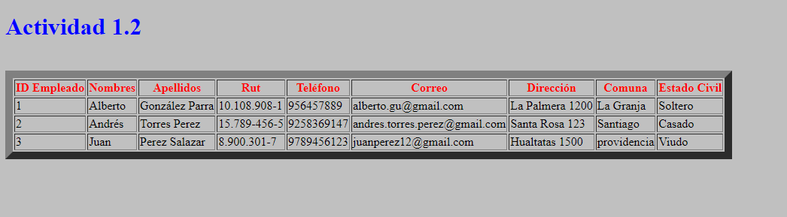
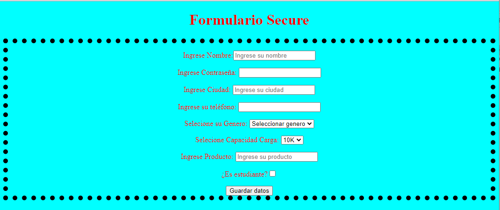
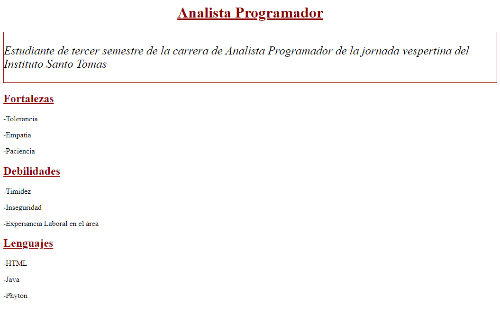
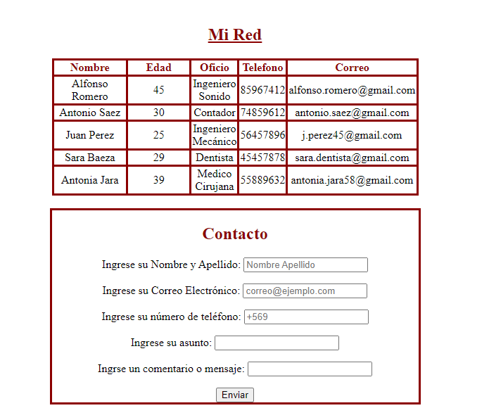
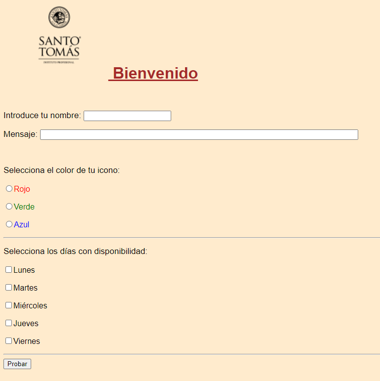
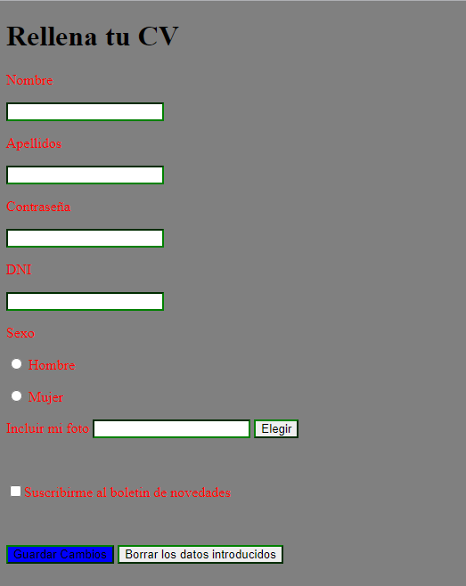

Aplicando las primeras funciones de una tabla. Aprediendo de las etiquetas "table, tr, th".

Siguiendo con el apredizaje, aqui se ponen en práctica el uso de la etiqueta "Form". Mezclando más funciones como lo son el "input" y sus diversos uso para entrada de texto

Utilizando lo aprendido en un par de semanas, se buscaba ir mezclando el uso tablas y párrafos. Además de otorgar un diseño más adecuado a un problable uso de usuarios.


Nuevamente ir mejorando lo que se va desarrollando en clases. Al crear un formulario con mejor estilo a la vista de un potencial usuario. Agregando imágenos y mejorando el uso del elemento "input".

Actividad solicitada para demostrar lo aprendido en las semanas de clases. Aquí el diseño de la página se basó en los requisitos de un caso de uso.
